Tres rumbos para el diseño, a partir de sigillvm.com.
Lo que toman de SIGILLVM.
Instrument Sans para todo y Cormorant SC solo para IVS CODEX y el latín; el negro cálido, el crema y el dorado #C9A45C, más apagado que el actual; filetes finos en lugar de cajas; frases en caja baja que terminan en punto.
Lo que se va.
Bodoni e IBM Plex, los rótulos en mayúsculas espaciadas, el botón dorado lleno en cada barra y el emblema circular de la cabecera, que pasa a ser IVS CODEX escrito, nítido a cualquier tamaño.
Las tres funcionan.
Cada opción es la app completa, con el mismo script que la actual: se puede buscar, abrir el Lector, recorrer el catálogo. Solo cambian la hoja de estilos, la portada y la cabecera.
Como está hoy · para comparar
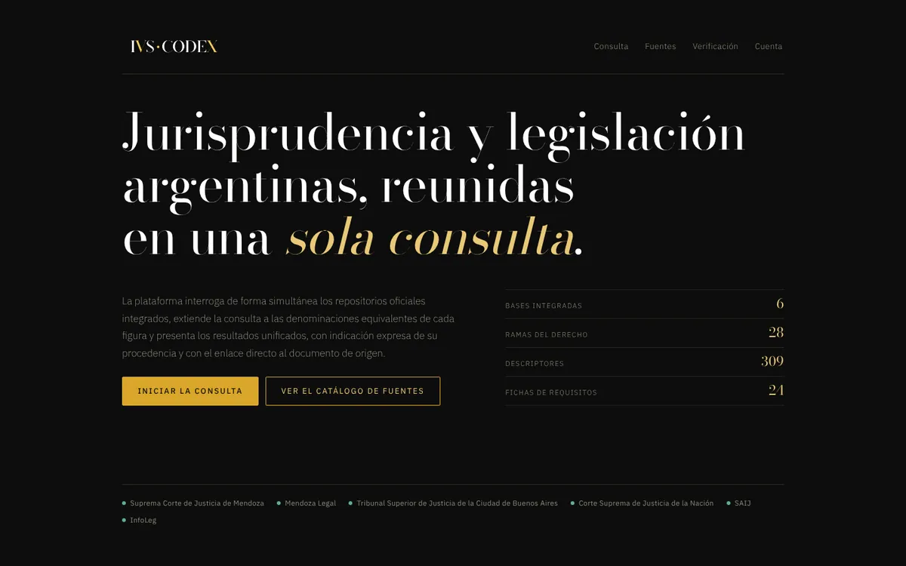
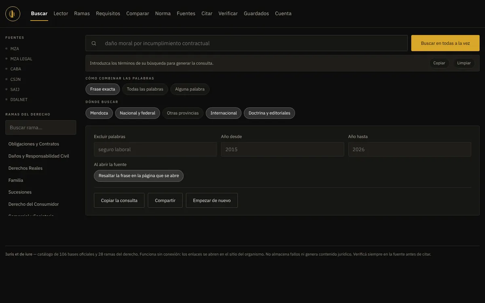
Sello.La más cercana a sigillvm.com: oscura, con grano y un sello propio.
Abrir la opción A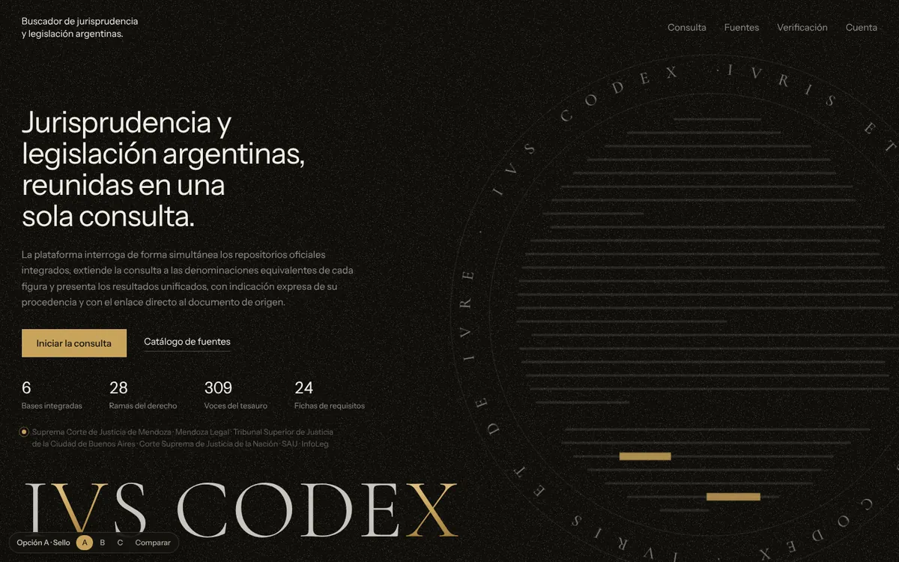
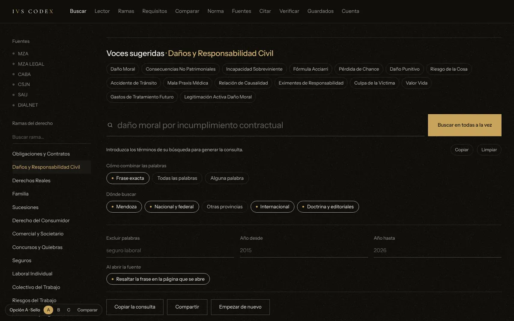
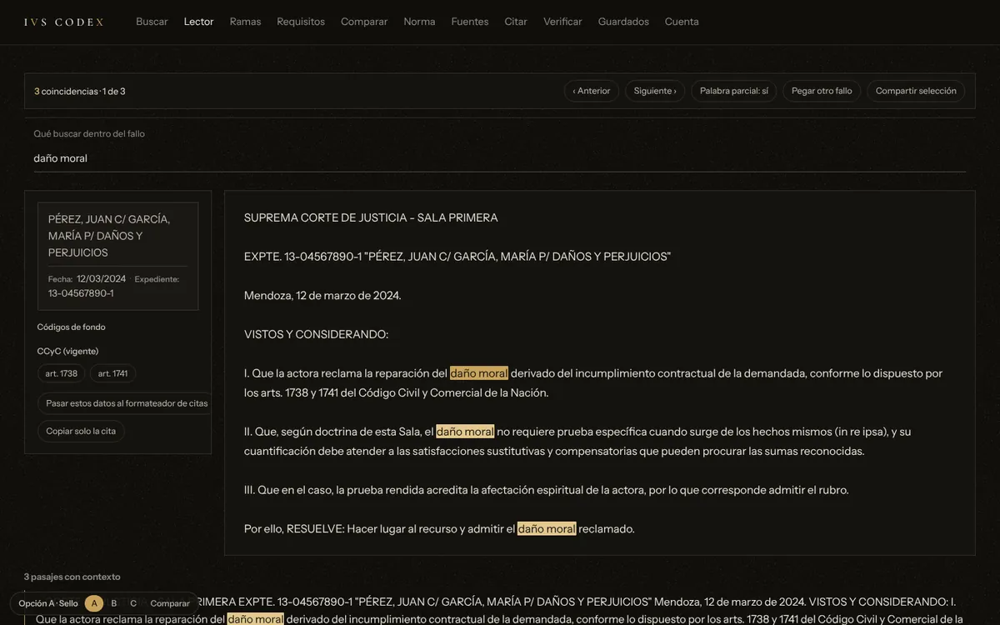
Cómo es.
La portada es un afiche, como la de SIGILLVM: el titular a la izquierda, IVS CODEX enorme al pie y, a la derecha, un sello que se dibuja al entrar. Adentro del sello hay una hoja de texto donde aparecen y se van marcas doradas —la búsqueda encontrando—, rodeada por IVRIS ET DE IVRE que gira despacio.
En la app.
- Sin cajas: cada sección empieza con un filete fino.
- La consulta es un renglón grande, subrayado, como el formulario de SIGILLVM.
- Las opciones elegidas llevan el punto dorado del sello.
A tener en cuenta.
Es la de más personalidad. El grano y el sello son más de marca que de herramienta: en la app el grano queda quieto, pero sigue estando.
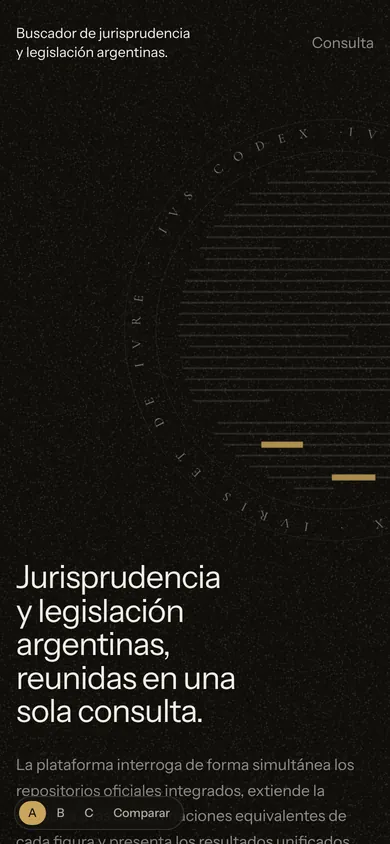
Códice.La paleta de SIGILLVM dada vuelta: papel crema y tinta, como una edición impresa.
Abrir la opción B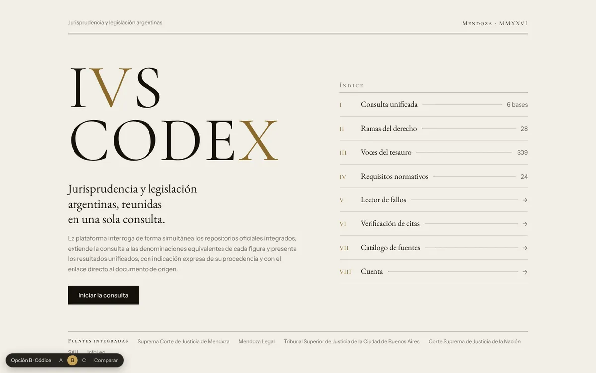
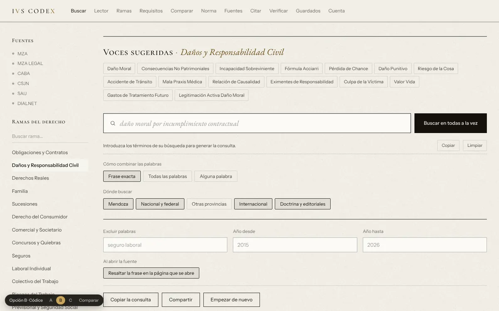
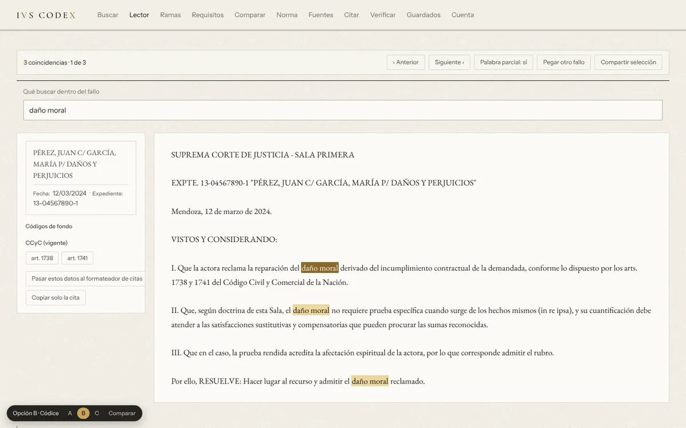
Cómo es.
La portada es una portadilla: IVS CODEX en capitales romanas y, al lado, un índice con números romanos que es el menú. Cada renglón lleva a su sección, con las cifras reales de la app.
En la app.
- Filete doble de imprenta bajo la cabecera y filete de tinta sobre cada sección.
- Los fallos y los resultados en EB Garamond: es la más cómoda para leer textos largos.
- Los títulos de sección en versalitas.
A tener en cuenta.
Es la que más se aleja de las apps oscuras de siempre y la que más seriedad jurídica transmite, pero se aleja también del negro de SIGILLVM y suma una tercera tipografía.
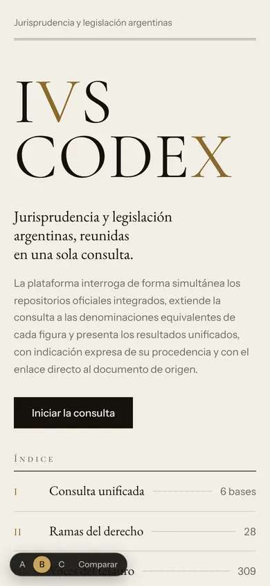
Índice.La de herramienta: los colores y las letras de SIGILLVM, ordenados para trabajar.
Abrir la opción C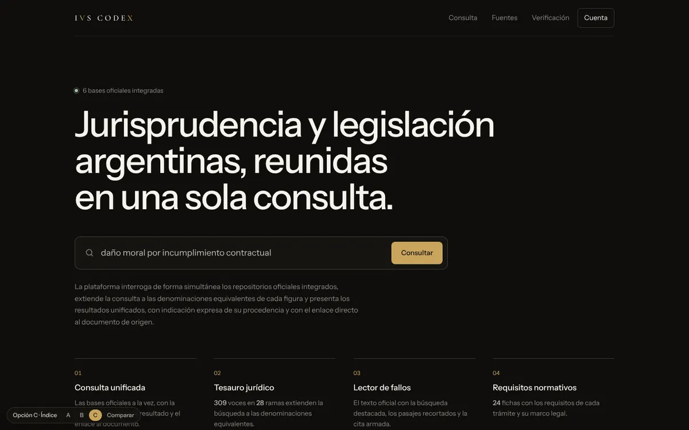
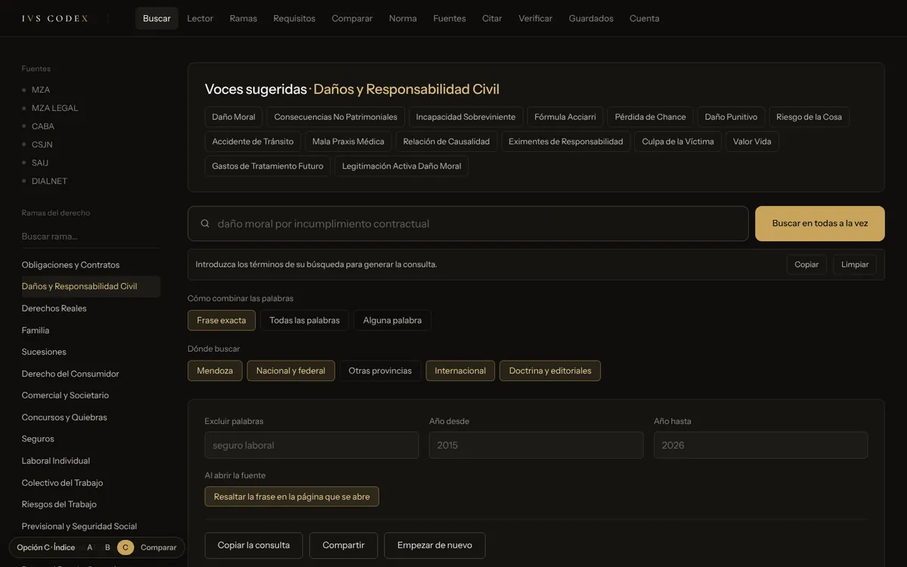
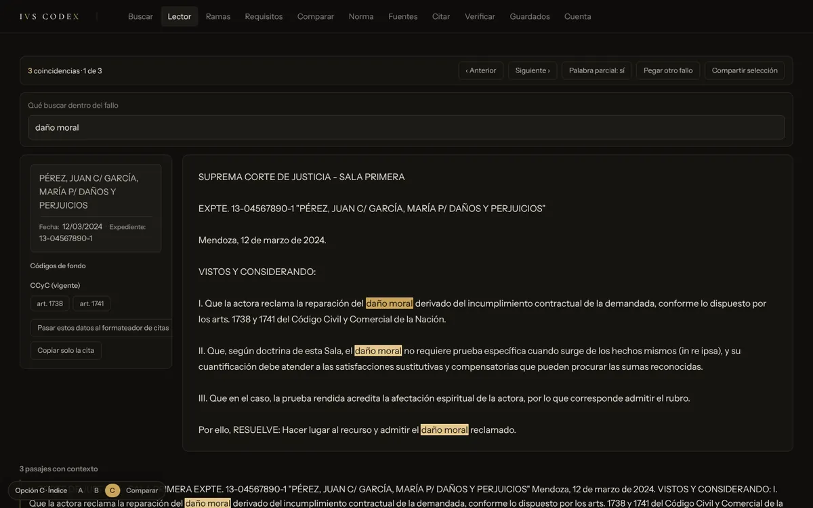
Cómo es.
La portada lleva directo a buscar: el titular grande, como el de SIGILLVM, y debajo un buscador donde se escriben solos ejemplos de consultas. Más abajo, cuatro columnas con filete para las funciones principales.
En la app.
- Las solapas como un selector, con la abierta marcada.
- Superficies apenas más claras que el fondo y esquinas de 6px.
- Cada resultado lleva al costado el tono de su fuente.
A tener en cuenta.
Es la más clara para el uso diario y no lleva grano. Tiene menos personalidad de marca que la A.
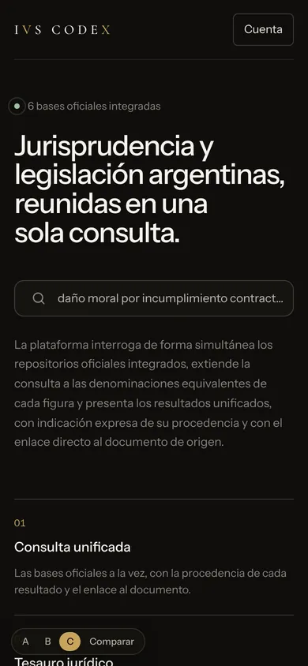
Se pueden combinar.
Por ejemplo, la portada de la A con la app de la C, o la B solo para el Lector. Con la letra, o con la mezcla, se pasa a la página principal.